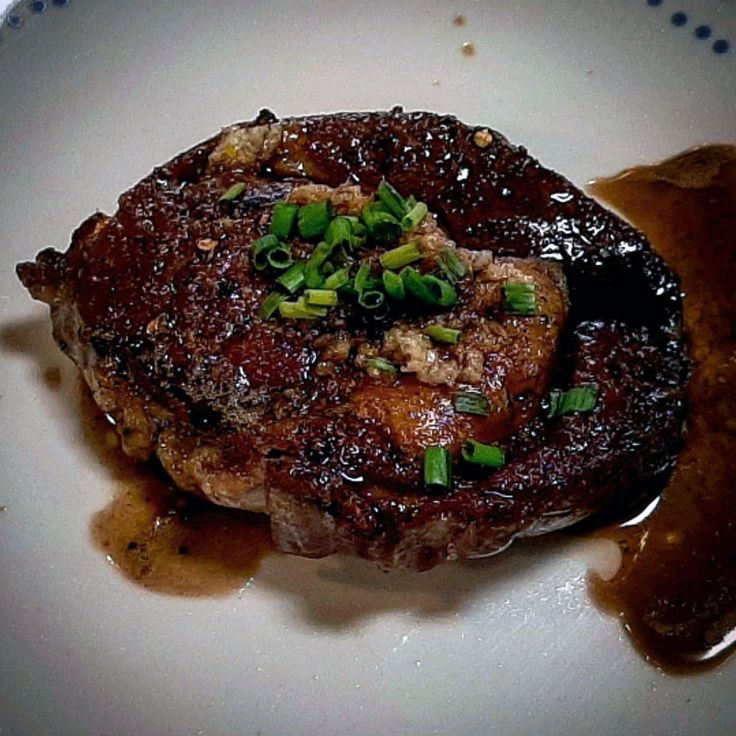

Cast Iron Pan-Seared Steak (Oven-Finished)

Description
Steak is marinated in the fridge for 45 minutes, then quickly pan-seared
in a cast iron skillet before it is finished in the oven.
The skillet is the star of the show. Why? Cast iron absorbs and retains
heat like no other surface. It heats up fast and cooks evenly. A hot cast
iron skillet puts a quick sear on steaks, creating a beautiful caramelized
crust, without overcooking the center of the steak. Also, the cast iron
skillet goes from stovetop to oven with ease.
This recipe calls for beef top-sirloin steaks. Choose steaks that are at
least 1-inch thick. If the steak is too thin, the inside will overcook
before the beautiful caramelized crust can form on the outside. Of course,
this stovetop-to-oven technique works well for more expensive cuts, too.
Ingredients
- 2 (6 ounce) beef top sirloin steaks
- 2 cups orange juice
- 1 cup apple cider vinegar
- ½ cup Worcestershire sauce
- 1 ½ tablespoons steak seasoning (such as Fiesta Brand® Uncle Chris'), or to taste
- freshly ground black pepper to taste
- 2 teaspoons olive oil
- sea salt to taste
Steps
- Place steaks side by side in large casserole dish. Add orange juice, cider vinegar, and Worcestershire
sauce. Marinate, uncovered, in the refrigerator for 45 minutes.
- Preheat the oven to 425 degrees F (220 degrees C).
- Remove casserole dish from refrigerator. Cover steaks with plastic wrap and let allow to come to room
temperature, at least 15 minutes.
- Place steaks on a clean work surface and generously rub with steak seasoning and black pepper.
- Heat olive oil in a cast-iron skillet over high heat.
- Cook steaks in the hot skillet until lightly browned on the bottom, 2 1/2 minutes. Flip and cook until
browned on the other side and red in the center, about 2 minutes more. Transfer skillet with the steaks to
the oven.
- Bake in the preheated oven until steaks are firm and reddish-pink to lightly pink in the center, 8 to 10
minutes. An instant-read thermometer inserted into the center should read from 130 degrees F (54 degrees C)
to 140 degrees F (60 degrees C).
- Remove steaks from oven; season with salt. Let rest for 5 minutes before serving.